Gentle introduction to STM32 ARM Cortex microcontrollers and boards programming
So you’ve been using AVR, PIC or some other microcontroller for a while and would like to try 32-bit ARM chips like the STM32 line. Want to start playing with them but don’t know how or where to start; I’m here to help.
ARM has taken over the embedded world, they’re ubiquitous in smartphones, tablets, laptops, computers inside computers, cars, refrigerators, microwave ovens, monitors, printers, you name it.
Note: Be aware that ARM is an architecture that manufacturers can implement. Is a common mistake to think ARM is a microcontroller on itself, it is not.
ST Microelectronics’s implementation of ARM are the STM32 microcontrollers: inexpensive, powerful and with great free software/hardware support.
Various series are available: F0, F1, F2, …, F7. You can identify your chip series after the STM32 prefix, I’m using a board with the “STM32F103C8” chip, so the series is F1.
Hardware
These chips are relatively inexpensive and widely available, often mounted in convenient development or breakout boards.
Individual chips can be bought from electronic stores like Digi-Key or Mouser. For the current purpose though, making your own PCB to mount them is quite inconvenient.
The other option is to get one of the nice development boards ST offers:
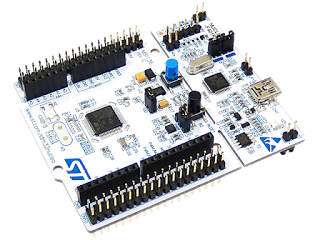
Although these are cheap and amazing, we can go even cheaper with some breakout boards available on Ebay and others. You can get a STM32F103 chip in a nice board for less than $ 5 USD.
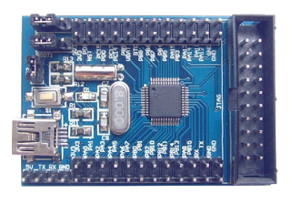 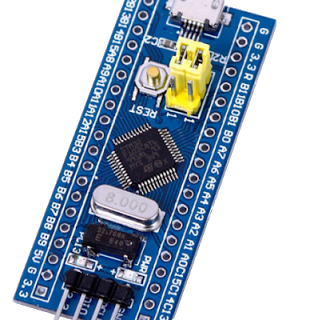
Programmer
STM32 chips are programmed using a ST-LINK device, which is an in-circuit debugger and programmer that interfaces with the chip using JTAG or Serial Wire Debugging (SWD). This is similar to the USBASP for AVR or the PICkit for PIC.
Development boards like the Nucleo include the st-link hardware right on the board, so you can connect it to a host computer using USB and program/debug the target chip without any additional external hardware.
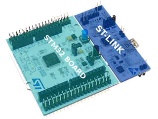
If you’re using breakout boards (like the Ebay ones) or if you mounted a chip in a custom PCB, you will need an external st-link hardware. Fortunately they are also available for cheap on Ebay, or you can buy the official one for a few extra bucks if you prefer, they both will work exactly the same with the flashing software.
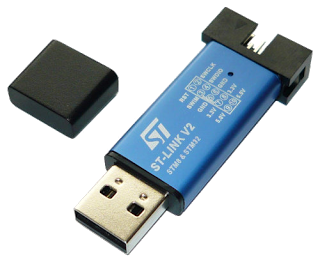 
Connections
If you’re using an ST development board with the st-link built-in just connect it to your computer and you’re ready to go, but for breakout boards and a dongle st-link you’ll need to connect four wires to it:
- VCC (3.3V)
- GND
- SWCLK
- SWDIO
WARNING: STM32 chips run on 3.3V, most breakout boards will include a voltage regulator, so it can be powered from USB, and st-link dongles will provide a 3.3V VCC PIN to power the chip. DON’T Connect the board to the PC using USB while the chip is powered up using the st-link programmer! Connect one or the other but not both simultaneously. The st-link dongle provides a 5V PIN as well, DON’T use it, the STM32 chips are not 5V tolerant, use the 3.3V PIN only.
ST-Link dongles have labeling on the front, just connect the right pins. On the board side, follow the labeling printed on the pins or use a pin out diagram. The connections for the st-link on the breakout board I’m using look like this:
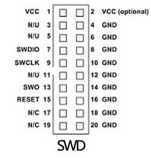 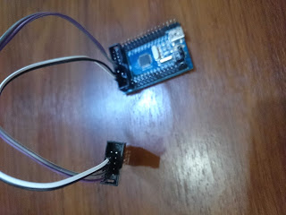 
Software
Host PC
You’ll need a compiler, a debugger, some utilities to manage your binaries and the necessary software to flash your firmware using the ST-LINK device (dongle or built-in):
- arm-none-eabi-gcc
- arm-none-eabi-gdb
- arm-none-eabi-binutils
- stlink
You should be able to install them all of from your distribution repositories. In case you can’t find stlink on them, get it from the GitHub repository.
The stlink package provides these executables:
st-flash - Write and Read a program from the target chipst-util - Creates a GDB server, so you can load, run and debug a program on the target chipst-info - Search and provides information about the st-link device and the target chipst-term - Gives you log-like reports from the program on the target chip
Test the setup
With the hardware connected and the PC software installed we can try it out and see if everything is working. No example program yet though.
Connect your st-link device (connected to the breakout board) or your development board to the host PC using USB and run:
$ st-info --probe
You’ll get some neat information about the chip that is hooked up to the st-link device:
Found 1 stlink programmers
serial: 543f6a06663f505130531567
openocd: "\x54\x3f\x6a\x06\x66\x3f\x50\x51\x30\x53\x15\x67"
flash: 65536 (pagesize: 1024)
sram: 20480
chipid: 0x0410
descr: F1 Medium-density device
Fantastic! Everything is working fine, lets move on.
Chip
ARM provides a Cortex Microcontroller Software Interface Standard (SMSIS) as an abstraction layer for the ARM Cortex core to increase software portability. Think of it as a standard API that you can use to interface with ARM chips in a vendor independent way.
On top of that you might want to have a Hardware Abstraction Layer (HAL) to interface with the peripherals each particular chip provides (UART, USB, I2C, SPI, TIMERS, etc).
We have two options of libraries that provide those abstraction layers:
- LibOpenCM3 (The one we are going to use)
- STM32Cube
LibOpenCM3 uses the LGPL licence (which I prefer), and STM32Cube uses the lax BSD licence. Balau covered the licensing topic in more detail in his blog post.
STM32Cube
ST provides the so called “STM32Cube”, which is a bundle of software and libraries for STM32 development. It contains a graphical software for basic C code generation, software layers of abstraction like HAL and middleware, software layers for built-in peripherals on ST’s development boards and examples.
The STM32Cube is available per chip series, so for development boards with STM32F4xx chips you’ll need the STM32CubeF4. I have a breakout board with the STM32F103C8 chip, so I would use the STM32CubeF1, you get the idea.
STM32Cube provides 3 layers:
Level 0
- Board Support Package (BSP) for interfacing with devices on the board that are not in the STM32 chip.
- Hardware Abstraction Layer (HAL) for low-level hardware interfacing (UART, USB, I2C, SPI, TIMERS, etc).
Level 1
Middleware software components like USB Host and Device libraries or FAT file system for SD cards interfacing
Level 2
Graphical demonstration that uses the level 1 Middleware.
You can read more about it on the STM32Cube user manual. Here is the STM32CubeF1 manual to get you started.
LibOpenCM3
LibOpenCM3 aims to provide a free (as in freedom) library for various ARM Cortex-M3 microcontrollers, including the STM32 chips.
Using this library is more or less straight forward, there are no (explicit) layers here. You can read more about it in the wiki. They have some fantastic Doxygen documentation for the API as well.
First program
The LibOpenCM3 project provides very useful examples, lets use one of those as the first program. I’m Using the STM32F103C8T6, so I need the F1 series examples and libraries, adjust the steps to use the appropriate one for your chip/board.
Notice that the examples are organized to correspond to various development boards, but it doesn’t really matter, the reason for this is the distribution of LED’s and Push buttons in those boards, but as long as you’re using the same chip series you just need to pick up one and connect LED’s, buttons, etc in the right pins as needed. I’m going to use the examples for the “stm32-h103” board from Olimex, even though I’m using a breakout board from Ebay; The F1 is the important thing here.
$ git clone --recursive 'https://github.com/libopencm3/libopencm3-examples'
$ cd libopencm3-examples
$ make
$ cd examples/stm32
$ cd f1
$ cd stm32-h103/miniblink
This example will BLINK an LED connected to PIN 12 of the GPIO port C, but my chip doesn’t have it! No problem, I’m going to change it (you can use your favorite editor here):
$ vim miniblink.c
Now change all appearances of GPIOC to GPIOB so the program uses the GPIO port B instead. (Use an available pin in your specific chip/board).
In Vim:
:%s/GPIOC/GPIOB
Save the file and compile:
$ make
Generate the binary:
$ arm-none-eabi-objcopy -O binary miniblink.elf miniblink.bin
Flash it:
$ st-flash write miniblink.bin 0x8000000
Connect an LED to the GND and PB12 pins through a 330 Ohm resistor and rejoice with it’s blinkiness.
Using GDB
You can also interface with the target device using GDB: Debug, Upload firmware, run, stop, set break points, etc. I’m going to assume you know how to use GDB and only going to explain how to upload the firmware from it.
Create a GDB server to interface with the connected target:
$ st-util -p 4444
Run ARM GDB:
$ arm-none-eabi-gdb
Connect to the server
(gdb) target extended-remote localhost:4444
Flash the firmware (notice we’re using the ELF file here not the BIN one):
(gdb) load miniblink.elf
Run the firmware:
(gdb) continue
You can stop it with C-c.
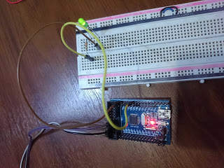
So you’ve been using AVR, PIC or some other microcontroller for a while and would like to try 32-bit ARM chips like the STM32 line. Want to start playing with them but don’t know how or where to start; I’m here to help.
ARM has taken over the embedded world, they’re ubiquitous in smartphones, tablets, laptops, computers inside computers, cars, refrigerators, microwave ovens, monitors, printers, you name it.
Note: Be aware that ARM is an architecture that manufacturers can implement. Is a common mistake to think ARM is a microcontroller on itself, it is not.
ST Microelectronics’s implementation of ARM are the STM32 microcontrollers: inexpensive, powerful and with great free software/hardware support.
Various series are available: F0, F1, F2, …, F7. You can identify your chip series after the STM32 prefix, I’m using a board with the “STM32F103C8” chip, so the series is F1.
Hardware
These chips are relatively inexpensive and widely available, often mounted in convenient development or breakout boards.
Individual chips can be bought from electronic stores like Digi-Key or Mouser. For the current purpose though, making your own PCB to mount them is quite inconvenient.
The other option is to get one of the nice development boards ST offers:
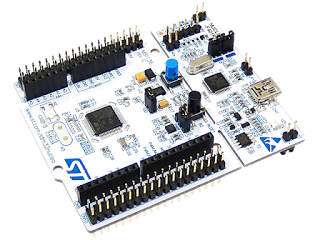
Although these are cheap and amazing, we can go even cheaper with some breakout boards available on Ebay and others. You can get a STM32F103 chip in a nice board for less than $ 5 USD.
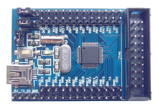 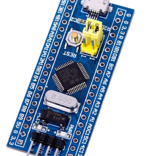
Programmer
STM32 chips are programmed using a ST-LINK device, which is an in-circuit debugger and programmer that interfaces with the chip using JTAG or Serial Wire Debugging (SWD). This is similar to the USBASP for AVR or the PICkit for PIC.
Development boards like the Nucleo include the st-link hardware right on the board, so you can connect it to a host computer using USB and program/debug the target chip without any additional external hardware.
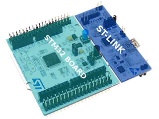
If you’re using breakout boards (like the Ebay ones) or if you mounted a chip in a custom PCB, you will need an external st-link hardware. Fortunately they are also available for cheap on Ebay, or you can buy the official one for a few extra bucks if you prefer, they both will work exactly the same with the flashing software.
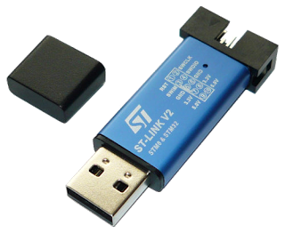
Connections
If you’re using an ST development board with the st-link built-in just connect it to your computer and you’re ready to go, but for breakout boards and a dongle st-link you’ll need to connect four wires to it:
- VCC (3.3V)
- GND
- SWCLK
- SWDIO
WARNING: STM32 chips run on 3.3V, most breakout boards will include a voltage regulator, so it can be powered from USB, and st-link dongles will provide a 3.3V VCC PIN to power the chip. DON’T Connect the board to the PC using USB while the chip is powered up using the st-link programmer! Connect one or the other but not both simultaneously. The st-link dongle provides a 5V PIN as well, DON’T use it, the STM32 chips are not 5V tolerant, use the 3.3V PIN only.
ST-Link dongles have labeling on the front, just connect the right pins. On the board side, follow the labeling printed on the pins or use a pin out diagram. The connections for the st-link on the breakout board I’m using look like this:
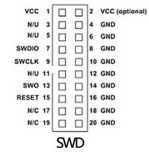 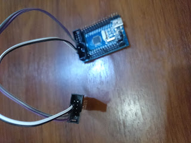
Software
Host PC
You’ll need a compiler, a debugger, some utilities to manage your binaries and the necessary software to flash your firmware using the ST-LINK device (dongle or built-in):
- arm-none-eabi-gcc
- arm-none-eabi-gdb
- arm-none-eabi-binutils
- stlink
You should be able to install them all of from your distribution repositories. In case you can’t find stlink on them, get it from the GitHub repository.
The stlink package provides these executables:
st-flash- Write and Read a program from the target chipst-util- Creates a GDB server, so you can load, run and debug a program on the target chipst-info- Search and provides information about the st-link device and the target chipst-term- Gives you log-like reports from the program on the target chip
Test the setup
With the hardware connected and the PC software installed we can try it out and see if everything is working. No example program yet though.
Connect your st-link device (connected to the breakout board) or your development board to the host PC using USB and run:
$ st-info --probeYou’ll get some neat information about the chip that is hooked up to the st-link device:
Found 1 stlink programmers
serial: 543f6a06663f505130531567
openocd: "\x54\x3f\x6a\x06\x66\x3f\x50\x51\x30\x53\x15\x67"
flash: 65536 (pagesize: 1024)
sram: 20480
chipid: 0x0410
descr: F1 Medium-density deviceFantastic! Everything is working fine, lets move on.
Chip
ARM provides a Cortex Microcontroller Software Interface Standard (SMSIS) as an abstraction layer for the ARM Cortex core to increase software portability. Think of it as a standard API that you can use to interface with ARM chips in a vendor independent way.
On top of that you might want to have a Hardware Abstraction Layer (HAL) to interface with the peripherals each particular chip provides (UART, USB, I2C, SPI, TIMERS, etc).
We have two options of libraries that provide those abstraction layers:
- LibOpenCM3 (The one we are going to use)
- STM32Cube
LibOpenCM3 uses the LGPL licence (which I prefer), and STM32Cube uses the lax BSD licence. Balau covered the licensing topic in more detail in his blog post.
STM32Cube
ST provides the so called “STM32Cube”, which is a bundle of software and libraries for STM32 development. It contains a graphical software for basic C code generation, software layers of abstraction like HAL and middleware, software layers for built-in peripherals on ST’s development boards and examples.
The STM32Cube is available per chip series, so for development boards with STM32F4xx chips you’ll need the STM32CubeF4. I have a breakout board with the STM32F103C8 chip, so I would use the STM32CubeF1, you get the idea.
STM32Cube provides 3 layers:
Level 0
- Board Support Package (BSP) for interfacing with devices on the board that are not in the STM32 chip.
- Hardware Abstraction Layer (HAL) for low-level hardware interfacing (UART, USB, I2C, SPI, TIMERS, etc).
Level 1
Middleware software components like USB Host and Device libraries or FAT file system for SD cards interfacing
Level 2
Graphical demonstration that uses the level 1 Middleware.
You can read more about it on the STM32Cube user manual. Here is the STM32CubeF1 manual to get you started.
LibOpenCM3
LibOpenCM3 aims to provide a free (as in freedom) library for various ARM Cortex-M3 microcontrollers, including the STM32 chips.
Using this library is more or less straight forward, there are no (explicit) layers here. You can read more about it in the wiki. They have some fantastic Doxygen documentation for the API as well.
First program
The LibOpenCM3 project provides very useful examples, lets use one of those as the first program. I’m Using the STM32F103C8T6, so I need the F1 series examples and libraries, adjust the steps to use the appropriate one for your chip/board.
Notice that the examples are organized to correspond to various development boards, but it doesn’t really matter, the reason for this is the distribution of LED’s and Push buttons in those boards, but as long as you’re using the same chip series you just need to pick up one and connect LED’s, buttons, etc in the right pins as needed. I’m going to use the examples for the “stm32-h103” board from Olimex, even though I’m using a breakout board from Ebay; The F1 is the important thing here.
$ git clone --recursive 'https://github.com/libopencm3/libopencm3-examples'
$ cd libopencm3-examples
$ make
$ cd examples/stm32
$ cd f1
$ cd stm32-h103/miniblinkThis example will BLINK an LED connected to PIN 12 of the GPIO port C, but my chip doesn’t have it! No problem, I’m going to change it (you can use your favorite editor here):
$ vim miniblink.cNow change all appearances of GPIOC to GPIOB so the program uses the GPIO port B instead. (Use an available pin in your specific chip/board).
In Vim:
:%s/GPIOC/GPIOBSave the file and compile:
$ makeGenerate the binary:
$ arm-none-eabi-objcopy -O binary miniblink.elf miniblink.binFlash it:
$ st-flash write miniblink.bin 0x8000000Connect an LED to the GND and PB12 pins through a 330 Ohm resistor and rejoice with it’s blinkiness.
Using GDB
You can also interface with the target device using GDB: Debug, Upload firmware, run, stop, set break points, etc. I’m going to assume you know how to use GDB and only going to explain how to upload the firmware from it.
Create a GDB server to interface with the connected target:
$ st-util -p 4444Run ARM GDB:
$ arm-none-eabi-gdbConnect to the server
(gdb) target extended-remote localhost:4444Flash the firmware (notice we’re using the ELF file here not the BIN one):
(gdb) load miniblink.elfRun the firmware:
(gdb) continueYou can stop it with C-c.
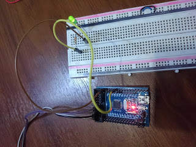